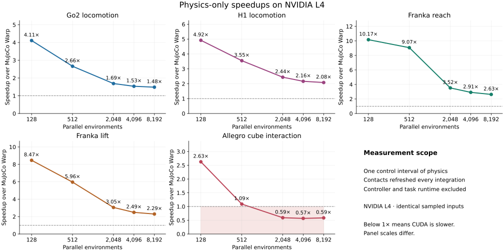
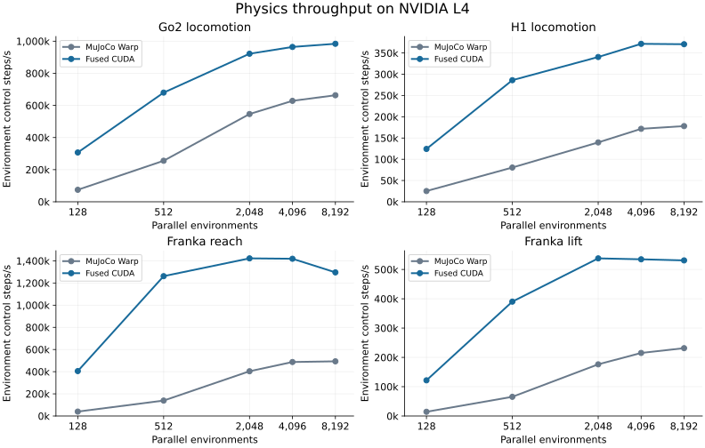
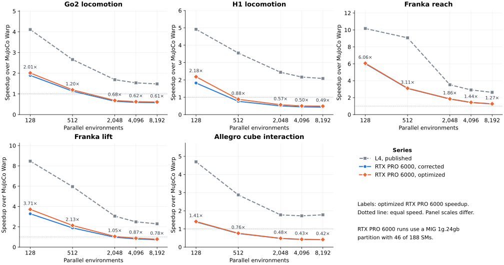
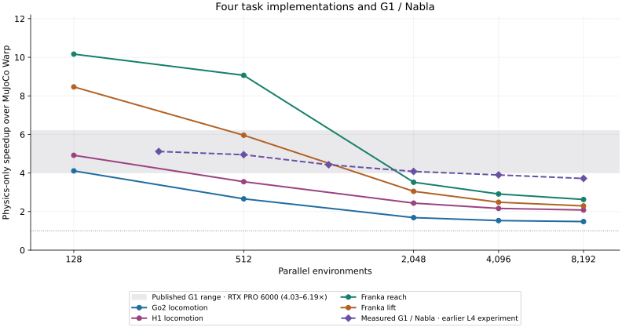
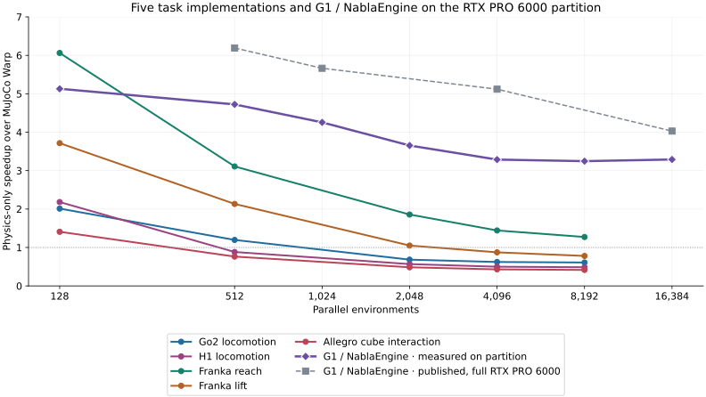
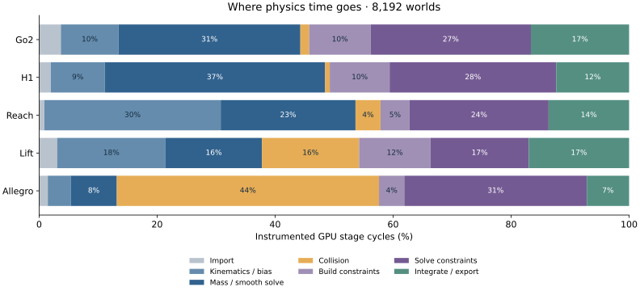
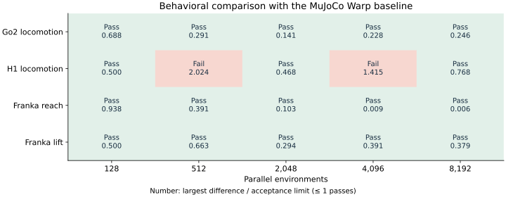
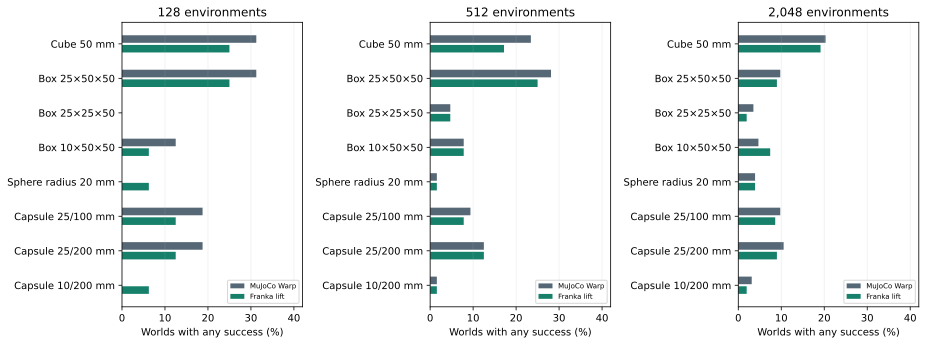
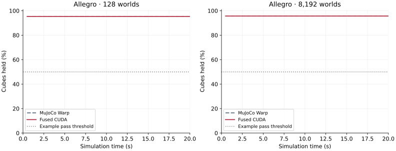

Task-specific CUDA physics: locomotion, arms and Allegro
Created · Modified
NVIDIA L4 and an RTX PRO 6000 partition · 128–8,192 environments · Physics-only measurements
Five hand-written CUDA implementations use fixed contact sets. Go2, H1 and the two Franka tasks run 1.48–10.17× faster than MuJoCo Warp. Allegro uses cuboids in both engines and runs 1.72–4.70× faster across the ladder. Allegro passes 5/5 retention comparisons. The other tasks retain 18/20 behavioral passes, with two H1 failures.
A later solver correction makes the warp’s loop exits uniform; without it, builds with nvcc 12.9 produced non-finite state once contacts or limits became active. On a 46-SM partition of an RTX PRO 6000, the corrected CUDA step is 1.41–6.06× faster than MuJoCo Warp at 128 environments. From 512 to 4,096 environments, depending on the task, it becomes slower, except for Franka reach. On the same partition the upstream G1 engine stays 3.25–5.13× faster from 128 to 16,384 environments.
Public NablaEngine fork · Standalone Newton / MuJoCo Warp environments
Physics-only scaling
The measurements in this section are from NVIDIA L4. They use the solver revision before the loop-exit correction.


Exact timings and throughput
| Task | Worlds | MJW ms | CUDA ms | Speedup | MJW steps/s | CUDA steps/s |
|---|---|---|---|---|---|---|
| Go2 locomotion | 128 | 1.714 | 0.417 | 4.11× | 74,668 | 306,912 |
| Go2 locomotion | 512 | 2.004 | 0.753 | 2.66× | 255,452 | 679,727 |
| Go2 locomotion | 2,048 | 3.749 | 2.222 | 1.69× | 546,342 | 921,721 |
| Go2 locomotion | 4,096 | 6.518 | 4.249 | 1.53× | 628,452 | 963,964 |
| Go2 locomotion | 8,192 | 12.350 | 8.328 | 1.48× | 663,316 | 983,718 |
| H1 locomotion | 128 | 5.065 | 1.030 | 4.92× | 25,270 | 124,308 |
| H1 locomotion | 512 | 6.354 | 1.790 | 3.55× | 80,580 | 286,037 |
| H1 locomotion | 2,048 | 14.668 | 6.014 | 2.44× | 139,625 | 340,546 |
| H1 locomotion | 4,096 | 23.865 | 11.025 | 2.16× | 171,632 | 371,526 |
| H1 locomotion | 8,192 | 46.016 | 22.103 | 2.08× | 178,024 | 370,625 |
| Franka reach | 128 | 3.211 | 0.316 | 10.17× | 39,861 | 405,222 |
| Franka reach | 512 | 3.679 | 0.406 | 9.07× | 139,168 | 1,261,675 |
| Franka reach | 2,048 | 5.072 | 1.440 | 3.52× | 403,808 | 1,422,271 |
| Franka reach | 4,096 | 8.408 | 2.887 | 2.91× | 487,160 | 1,418,749 |
| Franka reach | 8,192 | 16.608 | 6.322 | 2.63× | 493,243 | 1,295,829 |
| Franka lift | 128 | 8.899 | 1.051 | 8.47× | 14,383 | 121,762 |
| Franka lift | 512 | 7.817 | 1.312 | 5.96× | 65,496 | 390,304 |
| Franka lift | 2,048 | 11.617 | 3.807 | 3.05× | 176,294 | 537,894 |
| Franka lift | 4,096 | 19.037 | 7.660 | 2.49× | 215,158 | 534,732 |
| Franka lift | 8,192 | 35.389 | 15.429 | 2.29× | 231,483 | 530,962 |
| Allegro cube interaction | 128 | 4.408 | 0.938 | 4.70× | 29,037 | 136,434 |
| Allegro cube interaction | 512 | 5.190 | 1.805 | 2.87× | 98,649 | 283,598 |
| Allegro cube interaction | 2,048 | 10.705 | 6.028 | 1.78× | 191,312 | 339,771 |
| Allegro cube interaction | 4,096 | 19.612 | 11.386 | 1.72× | 208,852 | 359,735 |
| Allegro cube interaction | 8,192 | 39.645 | 22.285 | 1.78× | 206,633 | 367,604 |
RTX PRO 6000 partition
A second sweep uses one MIG 1g.24gb partition of an NVIDIA RTX PRO 6000 Blackwell Server Edition. The partition has 46 of the GPU’s 188 streaming multiprocessors (SMs) and 24 GB of memory and ran at a 2.37 GHz SM clock. The CUDA kernels are compiled with nvcc 12.9 for sm_120; MuJoCo 3.15 and Warp 1.17 are unchanged. Every CUDA result here includes the loop-exit correction.
Allegro runs the same public benchmark as on L4. The evaluation harness for the other four tasks is not public, so their timing states come from a MuJoCo Warp rollout with the public package’s nominal joint targets, sampled at controls 16, 64 and 111. Go2 stands on four feet and the Franka arms hold their poses, so these states may need fewer contacts and solver iterations than the policy-driven L4 states. Both engines replay from identical Newton state and MuJoCo warm-start acceleration. Timing otherwise follows the L4 protocol: 48 restored replays per state, five rounds after a discarded round, and the median round mean. For these four tasks the RTX and L4 ratios therefore come from different inputs and should not be compared point by point.

At 128 environments the optimized CUDA step is 2.01× faster for Go2, 2.18× for H1, 6.06× for reach, 3.71× for lift and 1.41× for Allegro. The ratio falls with batch size. The CUDA step becomes slower than MuJoCo Warp from 512 environments for H1 and Allegro, from 2,048 for Go2 and from 4,096 for lift. Reach remains 1.27× faster at 8,192. MuJoCo Warp timings from the two independent sweeps agree within 1.4%.
Each world occupies one warp, and its shared scratch limits residency to 5–10 worlds per SM (Go2 6, H1 5, reach 10, lift 6, Allegro 5). On 46 SMs, 8,192 Go2 worlds run in about 30 sequential waves, each taking the full latency of one world’s step. MuJoCo Warp distributes each step across bodies, degrees of freedom and constraint rows and keeps the partition occupied. A full RTX PRO 6000 has about four times as many SMs and would need fewer waves per batch, but it was not measured.
Allegro shows the largest per-world difference from L4 under an identical protocol. Its CUDA step takes 3.12 ms per control at 128 environments, against 0.94 ms on L4. MuJoCo Warp takes 4.39 ms against 4.41 ms. Builds from nvcc 12.6 or 12.9, for sm_89 or sm_120, all take 3.1–3.3 ms. With clock64 instrumentation, constraint solution takes 72% of cycles, against 38.1% on L4. The final integration averages 3.9 Newton iterations. In an eight-world diagnostic run, 12% of line searches reached the 24-step refinement limit. Measured shared-load and shuffle latencies (52 and 37 cycles) do not explain a threefold difference. The cause was not isolated. The L4 run predates the solver correction and did not record iteration counts.
Exact RTX PRO 6000 timings
MuJoCo Warp time and speedup are from the optimized sweep. “Before” and “after” are the CUDA step before and after the solver optimizations. Steps/s counts environment control steps per second for the optimized CUDA step.
| Task | Worlds | MJW ms | CUDA ms before | CUDA ms after | Speedup | CUDA steps/s | L4 speedup |
|---|---|---|---|---|---|---|---|
| Go2 locomotion | 128 | 1.147 | 0.606 | 0.570 | 2.01× | 224,462 | 4.11× |
| Go2 locomotion | 512 | 1.261 | 1.113 | 1.055 | 1.20× | 485,459 | 2.66× |
| Go2 locomotion | 2,048 | 2.513 | 3.884 | 3.678 | 0.68× | 556,824 | 1.69× |
| Go2 locomotion | 4,096 | 4.356 | 7.405 | 6.998 | 0.62× | 585,322 | 1.53× |
| Go2 locomotion | 8,192 | 8.394 | 14.563 | 13.786 | 0.61× | 594,233 | 1.48× |
| H1 locomotion | 128 | 3.077 | 1.674 | 1.410 | 2.18× | 90,769 | 4.92× |
| H1 locomotion | 512 | 3.454 | 4.530 | 3.915 | 0.88× | 130,768 | 3.55× |
| H1 locomotion | 2,048 | 6.828 | 13.612 | 12.034 | 0.57× | 170,179 | 2.44× |
| H1 locomotion | 4,096 | 11.861 | 26.711 | 23.765 | 0.50× | 172,351 | 2.16× |
| H1 locomotion | 8,192 | 23.018 | 53.466 | 47.376 | 0.49× | 172,915 | 2.08× |
| Franka reach | 128 | 2.401 | 0.400 | 0.396 | 6.06× | 323,163 | 10.17× |
| Franka reach | 512 | 2.831 | 0.919 | 0.911 | 3.11× | 562,312 | 9.07× |
| Franka reach | 2,048 | 4.194 | 2.282 | 2.259 | 1.86× | 906,743 | 3.52× |
| Franka reach | 4,096 | 6.035 | 4.235 | 4.183 | 1.44× | 979,282 | 2.91× |
| Franka reach | 8,192 | 10.412 | 8.296 | 8.183 | 1.27× | 1,001,132 | 2.63× |
| Franka lift | 128 | 4.942 | 1.514 | 1.330 | 3.71× | 96,219 | 8.47× |
| Franka lift | 512 | 5.613 | 2.932 | 2.632 | 2.13× | 194,551 | 5.96× |
| Franka lift | 2,048 | 9.127 | 9.456 | 8.690 | 1.05× | 235,671 | 3.05× |
| Franka lift | 4,096 | 14.513 | 18.091 | 16.616 | 0.87× | 246,504 | 2.49× |
| Franka lift | 8,192 | 25.297 | 35.325 | 32.448 | 0.78× | 252,468 | 2.29× |
| Allegro cube interaction | 128 | 4.394 | 3.121 | 3.121 | 1.41× | 41,012 | 4.70× |
| Allegro cube interaction | 512 | 5.283 | 7.091 | 6.929 | 0.76× | 73,893 | 2.87× |
| Allegro cube interaction | 2,048 | 9.930 | 20.952 | 20.503 | 0.48× | 99,889 | 1.78× |
| Allegro cube interaction | 4,096 | 16.902 | 40.183 | 39.312 | 0.43× | 104,193 | 1.72× |
| Allegro cube interaction | 8,192 | 31.798 | 78.175 | 76.513 | 0.42× | 107,066 | 1.78× |
Solver optimizations
Two changes reduce CUDA step time on this partition. First, the joint-space mass matrix and the Newton Hessian are symmetric, but both were assembled over all entries; the Hessian loop also left the upper-triangle lanes idle. Both now iterate over lower-triangle entries, and the Hessian skips inactive constraint rows, which contributed exact zeros. Second, H1 and lift now run all eight integrations of a control in one launch, as reach already did, which removes three state import/export round trips per control. Go2 and Allegro keep per-integration launches because their controllers act between integrations.
CUDA time falls by 11.0–15.8% for H1, 8.1–12.1% for lift, 5.2–5.9% for Go2, 0.9–1.4% for reach and 0–2.3% for Allegro. After the changes, all four MJCF tasks pass the public package’s one-control agreement and 100-control finiteness check. Allegro passes all five retention comparisons before and after. The optimizations do not change the occupancy limit that dominates large batches.
Solver correction
Each world’s constraint solver runs on 32 lanes that exchange values through full-warp shuffles and __syncwarp() barriers. The Newton loop, the step bracket and the step refinement each end when a floating-point test passes. Every lane evaluated that test on its own copy of the broadcast values, so the code assumed that all lanes always reach the same decision. The compiler does not guarantee this. Once lanes leave a loop at different iterations, later shuffles combine values from different points in the program.
With nvcc 12.9 at -O3 for sm_120, all five tasks produced non-finite state within their first constrained controls, and an sm_89 Go2 build failed the same way. Later launches failed with illegal-address errors. An unoptimized (-G) build of the same source stayed finite. The published L4 runs stayed finite and passed their behavioral checks. The correction lets lane 0 make each exit decision and broadcasts the next line-search step:
bool uniform(bool c) { return __shfl_sync(0xffffffff, c, 0) != 0; }
if (uniform(df >= 0)) break; // bracket search
next = __shfl_sync(0xffffffff, next, 0); // refinement step
if (next == alpha) break;When lanes already agree, the result is unchanged. With the correction, the public package’s 100-control check passes for Go2, H1, reach and lift; before it, all four failed on the RTX PRO 6000 partition.
G1 / Nabla reference
The figure below is from NVIDIA L4; G1 measurements on the RTX PRO 6000 partition follow it.

The earlier G1 measurements are 4.95×, 4.08×, 3.90× and 3.72× at the shared batch sizes 512, 2,048, 4,096 and 8,192. No G1 measurement exists at 128. Published G1 results.
Comparison limits
G1 uses four 5 ms integrations, a ten-iteration Newton cap, eight fused kernels per control, and MuJoCo 3.17 / Warp 1.18. These tasks use MuJoCo 3.15 / Warp 1.17 and a 100-iteration cap. G1's native graph includes corpus-reset copies; task timings exclude restoration. Models and the published GPU differ. Six of 4,096 G1 corpus worlds exceeded relative velocity error 10−4, with a maximum of 11.1%; full numerical equivalence was not established.
G1 on the RTX PRO 6000 partition
The upstream G1 engine was also timed on the same 46-SM partition, with NablaEngine’s unchanged paper timing kit (scripts/paper_bench/run.sh, parts ours and mjw_native). Its installation checks (scripts/verify.sh --quick: forward step, gradient, bitwise JAX interface and capability) pass on the partition. The kit times one control step of the mjlab G1 (four 5 ms substeps, ten Newton iterations, per-world friction and center-of-mass randomization) from the mf_s0 corpus states. It compares NablaEngine’s forward step without a gradient tape, under jax.jit, with a CUDA graph of the native MuJoCo Warp 3.17 forward at its documented contact capacity. The task measurements above use a different protocol, so the two sets of ratios are not paired.

G1 stays faster than MuJoCo Warp at every size: 5.13× at 128 environments, 4.72× at 512, 3.65× at 2,048 and 3.25–3.29× from 4,096 to 16,384. In contrast with the five task kernels, its ratio levels off instead of falling below 1×. On the full card the published ratios are higher: 6.19× at 512 and 4.03× at 16,384. Going from the full card to the partition increases NablaEngine’s 4,096-world time by 3.9× (1.20 to 4.70 ms), close to the 4.1× ratio of SMs, but MuJoCo Warp’s by only 2.5× (6.15 to 15.45 ms). The partition therefore understates G1’s full-card advantage. The task kernels may be affected in the same direction, but this was not measured.
The kit also measures the 4,096-world cell in three fresh processes. Their per-process medians of NablaEngine’s forward step are 3.99–4.06 ms on mf_s0 (3.84× against 15.46 ms), lower than the 4.70 ms of the sweep row. Both values come from the kit unchanged; the sweep row is used in the figure because it covers every size. The gradient from the input state (vjp) takes 0.84 ms at 128 environments and 7.04 ms at 4,096.
Exact G1 timings on the partition
Median over five kept rounds of the kit’s forward sweep on mf_s0 (states tiled above 4,096), in ms per control step. MuJoCo Warp uses the procedure capacity (24 contacts and 128 constraint rows per world at 4,096). Steps/s counts environment control steps per second for NablaEngine.
| Worlds | MJW ms | NablaEngine ms | Speedup | NablaEngine steps/s | Published full card |
|---|---|---|---|---|---|
| 128 | 3.314 | 0.646 | 5.13× | 198,142 | – |
| 512 | 4.218 | 0.893 | 4.72× | 573,348 | 6.19× |
| 1,024 | 5.703 | 1.340 | 4.26× | 764,179 | 5.66× |
| 2,048 | 8.794 | 2.407 | 3.65× | 850,852 | – |
| 4,096 | 15.449 | 4.700 | 3.29× | 871,489 | 5.12× |
| 8,192 | 29.845 | 9.193 | 3.25× | 891,113 | – |
| 16,384 | 58.922 | 17.911 | 3.29× | 914,745 | 4.03× |
Remaining bottlenecks

Allegro spends 5.3% of instrumented cycles in collision and 38.1% in constraint solution. The box contact test uses six face axes and a clipped manifold. Its 16.8 KiB of shared scratch permits 5 resident warps per SM, out of 48 available.
Go2 and H1 spend about 58% and 66% in mass assembly/smooth solve plus constraint solution; collision takes only 1.5% and 0.8%. Reach spends 30% in kinematics/bias. Lift spreads its work across the stages, with collision at 16.5%. Shared scratch limits the original four tasks to 6, 5, 10 and 6 resident warps per SM, respectively.
Allegro’s next targets are the constraint solve and its remaining shared scratch. For locomotion, sparse constraint Jacobians and computing one mass-matrix triangle could reduce work and storage. The original four tasks average only 1–2 final-substep Newton updates; lowering the iteration cap is unlikely to help much. These are profiling-based directions, not measured improvements.
What each implementation keeps
The upstream G1 benchmark model has two spheres, 31 capsules and 502 candidate pairs, including 14 sole–floor pairs. Its fixed topology, sparse ancestry and register/warp matrix solves inform this work. Full articulated mass, bias and gravity remain in every implementation.
Go2 uses foot spheres and capsule body/limb proxies; all 27 plane pairs remain. H1 uses two capsules per sole and one torso capsule; five plane pairs, ten contacts and 25 velocity DOFs. Neither robot uses self pairs.
Franka reach uses capsule arm links, a bounded tabletop and flat finger pads; nine DOFs and the finger equality. Franka lift keeps 19 pairs, analytic tabletop and pad–object contacts, 15 dynamic DOFs, and eight object families: four boxes, a sphere and three capsules. The gripper fingers close on the object and contact plus friction hold it during the lift; there is no attachment or weld constraint.
Allegro has 16 finger hinges, a free cube and an animated fixed root. The original sinusoidal controller updates fingers and root every substep. The fused kernel reads the live root transform directly; validation checks it against the command every sample. Fourteen hand-picked cube pairs remain; self contacts are disabled as in the Newton example. The hand links, palm, mount, cube and floor are all cuboids in both engines.
Each hand collider is one box fitted to its authored local bounds. The CUDA contact routine tests six face axes, clips one incident face and retains at most four points. Edge-cross axes are omitted, so this is a task-specific approximation. It stores no mesh vertices or hull tables. Twelve contact slots and 64 constraint rows cover this rollout; overflow is checked. Unused slider, equality, friction-loss and general material-mixing paths are removed. Authored masses, inertias, centers of mass, joints and initial coordinates are preserved.
Measurement boundary
CUDA events surround one captured physics control interval, including collision, dynamics, constraints, integration and native Newton/MuJoCo buffer conversion. Prepared controls, applied forces and warm-start acceleration are shared. Restoration, controller updates, observations, rewards and task managers are excluded; implicit actuator dynamics remain inside physics.
Both engines refresh contacts every integration. Go2 uses four 5 ms integrations, H1 and Allegro eight 2.5 ms integrations, and Franka eight 4.167 ms integrations. Allegro’s baseline uses Newton collision detection plus MuJoCo Warp, following the Newton example; its contact refresh changes from once per frame to every substep on both sides. Its timed graphs hold the prepared root pose and targets fixed; its behavioral rollouts animate both every substep.
On NVIDIA L4, timings use states from baseline controls 16, 64 and 111. After at least 0.5 seconds of warm-up, each round averages 48 restored replays per state with equal state weighting. The result is the median of five round means after discarding an initial round. The original four tasks retain their seed-42 randomized runs. Allegro uses the example’s common initial state across worlds, so its validation is not a randomized robustness test. Go2’s corpus sampling uses eight integrations; its timed and behavioral steps use four.
Executed physics kernels per control step
Separate Nsight Systems traces at 512 and 8,192 worlds replay saved timing inputs. Counts cover three states, five replays each for the original tasks and three each for Allegro. Native counts vary with convergence; instrumented durations are excluded from timing results.
| Task | Worlds | MuJoCo Warp kernels | CUDA kernels |
|---|---|---|---|
| Go2 locomotion | 512 | 522–555 | 4 |
| Go2 locomotion | 8,192 | 577–610 | 4 |
| H1 locomotion | 512 | 1160–1193 | 4 |
| H1 locomotion | 8,192 | 1272–1294 | 4 |
| Franka reach | 512 | 972–983 | 1 |
| Franka reach | 8,192 | 972–1137 | 1 |
| Franka lift | 512 | 1247–1313 | 4 |
| Franka lift | 8,192 | 1412–1445 | 4 |
| Allegro cube interaction | 512 | 1065–1306 | 8 |
| Allegro cube interaction | 8,192 | 1065–1328 | 8 |
Earlier end-to-end measurements included the Isaac Lab runtime. That broader scope is excluded here.
Behavioral validation
The original four tasks retain 18/20 passes under their unchanged thresholds. Allegro passes 5/5 comparisons over 1,000 controls (20 seconds). Its original test requires at least 50% of cubes held and hand bodies near the initial root. The paired checks require held fraction within 10 percentage points and mean cube height within 5 cm. State is sampled every 25 controls for finiteness, error flags and root-pose agreement (error below 10⁻⁵).
The original task states, observations and rewards remain finite. Allegro’s sampled states are finite with zero overflow flags.
| Task / worlds | Failed check | Difference | Limit |
|---|---|---|---|
| H1 locomotion / 512 | reward std relative difference | 40.47% | 20% |
| H1 locomotion / 4,096 | reward std relative difference | 28.31% | 20% |
H1 fails the reward-standard-deviation check at 512 and 4,096 worlds; it passes at 8,192 with a 15.36% difference. Baseline / CUDA fall counts are 1 / 0, 10 / 3 and 16 / 9, respectively. Rare termination penalties strongly affect this statistic.

Acceptance thresholds
Go2, H1 and Franka use normalized reward mean/std differences: 0.10/0.20. Observation mean/std RMS differences: 0.15/0.20. Locomotion checks mean height (2 cm), uprightness (0.03), tracking error (0.08 m/s), and fall events per environment (0.10). Reach checks position error (1 cm) and success events per environment (0.10). Lift checks grasp/success indicators (0.10), mean object height (5 cm), and target error (5 cm). These engineering thresholds do not establish training equivalence.
Lift passes the aggregate thresholds, but shape behavior changes. For the 1×5×5 cm box at 8,192 worlds, any-success frequency is 7.5% with CUDA versus 15.4% with MuJoCo Warp. The other family outcomes are shown below.

Allegro retains 95.3–95.7% of cubes across the ladder, versus 95.3–95.7% for MuJoCo Warp. The largest mean-height difference is 0.34 cm. Retention does not measure dexterous manipulation, orientation tracking or training equivalence.

Recorded rollouts
Go2 and Franka clips show the first ten seconds of their 128-world evaluation. Allegro shows all 20 seconds from world zero with the standard controller. Allegro displays its cuboid collision geometry. All clips render recorded fused body poses at simulation speed without stepping native physics.
Implementation map
One warp owns a world. Body work and contact pairs run across lanes; a fixed register row holds each velocity’s matrix coefficients. Shared scratch is reused between mass assembly, contact rows and the constraint solve. Each launch imports Newton state and exports state/contact outputs at its boundary. Go2 uses four kernels per control. H1, reach and lift fuse all eight integrations into one; the L4 measurements used four for H1 and lift. Allegro uses one kernel per integration, eight per control.
| File | Purpose |
|---|---|
environment.py, run.py, benchmark.py | Load MJCF or USD into Newton, replicate worlds, prepare controls, reset and time either engine. |
model.xml / Allegro model.usda | Articulation and baseline geometry; Allegro uses the same cuboids in both engines. |
compact.py, task_specs.py | Compile dimensions, ancestry, pair lists and actuator maps; pack varying physical parameters and audit reset changes. |
task_step.cuh | Hand-written kinematics, mass/bias, task collision, constraints, register solve and integration. |
primitive_math.cuh, primitive_collision.cuh | Task math and collision helpers. |
direct_io.cuh, launch.cuh | Read/write Newton buffers and repeat the fixed integration count. |
Short code excerpts
The full integration loop, with diagnostics omitted:
for (int sub = 0; sub < INTERNAL_STEPS; ++sub) {
prepare(dd, s, w, lane, v.H, v.p);
__syncwarp();
solve_integrate(dd, s, v, w, lane, io,
sub == INTERNAL_STEPS - 1);
__syncwarp();
}Ancestry excludes unrelated body Jacobian entries:
if (ancestor(s, body, dof, world))
jacpoint(s, world, body, s.com[body], dof,
s.Jv[J_SLOT[body * NV + dof]]);H1’s two sole capsules use fixed body-local dimensions:
center = (0.055, ±0.025, -0.055);
axis = (1, 0, 0);
radius = 0.015;
half_length = 0.105;The public standalone package contains models, CUDA sources and a runner/benchmark for all five tasks; corpus_benchmark.py reproduces the RTX PRO 6000 timings for the four MJCF tasks. Newton and Warp provide buffers and launch plumbing; the physics kernels are hand-written CUDA. The Allegro benchmark reproduces this paired sweep. The other standalone runners use nominal resets and absolute joint targets, separately from their randomized evaluation here. The original task harness stays local. These forward solvers require the supplied topology; changing it requires revisiting the specialization.